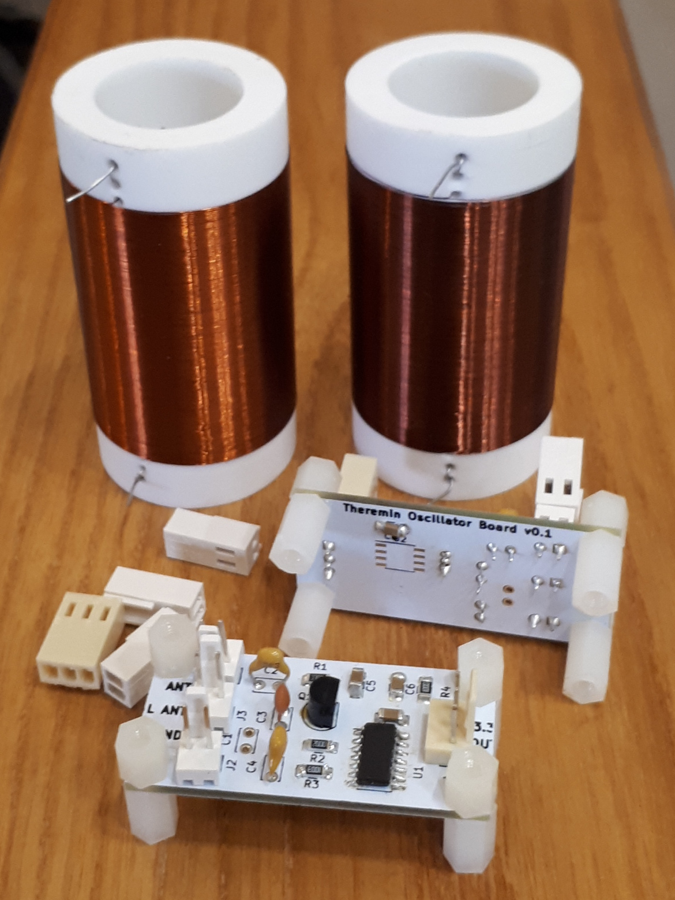
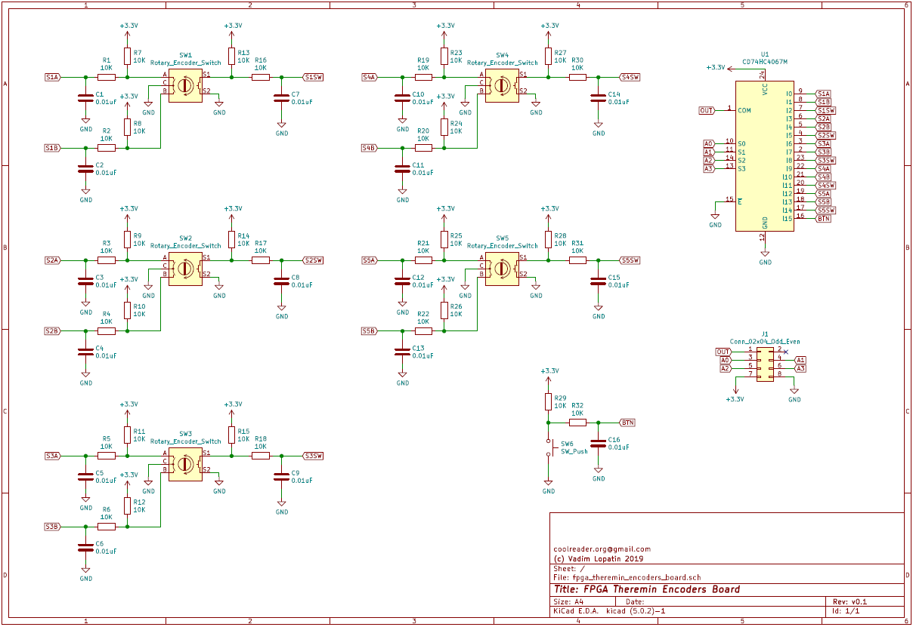
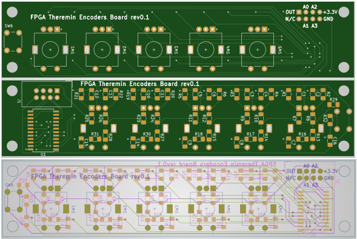

The goal of this project is to provide open source DIY build of FPGA based digital Theremin
Unlike analog theremins, digital theremin is in general capacitive sensor which measures distance from hands to antennas, and digital synthesizer which generates sound.
There is one well known digital theremin on market, Moog Theremini.
Due to high latency, it's mostrly unplayable, just a toy.
There is a good digital theremin project, Open.Theremin but it still uses too poor hardware (Arduino UNO) as a base.

Dewster's D-Lev FPGA theremin project is in development since 2012. Good FPGA based design, produces realistic sound without latency. Although, currently used hardware has not enough resources. Build project for this theremin with professionally made cabinet.
In this project, we will try to provide easy to build DIY theremin design with potentially unlimited capabilities.
Why FPGA?
Why PSOC?
Why Xilinx
Digilent Cora Z7 board (either 7007 or 7010) is inexpensive solution which mets all hardware requirements for this project.
For audio playback / recording, we need some audio codec board(s). Digilent PMod I2S2 and AMP3 were selected.
It makes sense to add touch screen LCD for rich GUI functionality and advanced controls. Waveshare 4.3inch display was selected.
Even with touch screen, it makes sense to have hardware controls: encoders, buttons, pedals.
| Device | Features | Store link | Datasheet |
|---|---|---|---|
Digilent Cora Z7 |
Xilinx Zynq 7007/7010 based development board | Digilent store $99/$129 | Reference manual |
Digilent PMod I2S2 |
24bit I2S 48000Hz stereo Line In / Line Out | Digilent store $21.99 | Reference manual |
Digilent PMod AMP3 |
24bit I2S 48000Hz stereo Phones Amplifier | Digilent store $9.99 | Reference manual |
5V 2.5A Switching Power Supply |
5V, 2.5A | Digilent store $12.99 | No reference manual |
4.3inch Capacitive Touch LCD, 800x480  |
RGB interface 2x20 2.54mm pin header or FPC connector Touch screen controller accessible via I2C |
Waveshare store $27.99 | Wiki User manual |
| Board | KiCAD Schematic | Gerber file |
|---|---|---|
| Cora Z7 Theremin Shield |
 |
 |
| Oscillator  |
 |
 |
| Encoders Board |
 |  |
| Expression Pedal Connectors |
||
| Audio Connectors |
 |
|
| PMod adapter |
 |
|
LCD Mount |
No schematic. It's just for mounting of Waveshare 4.3inch 800x480 touch LCD |  |